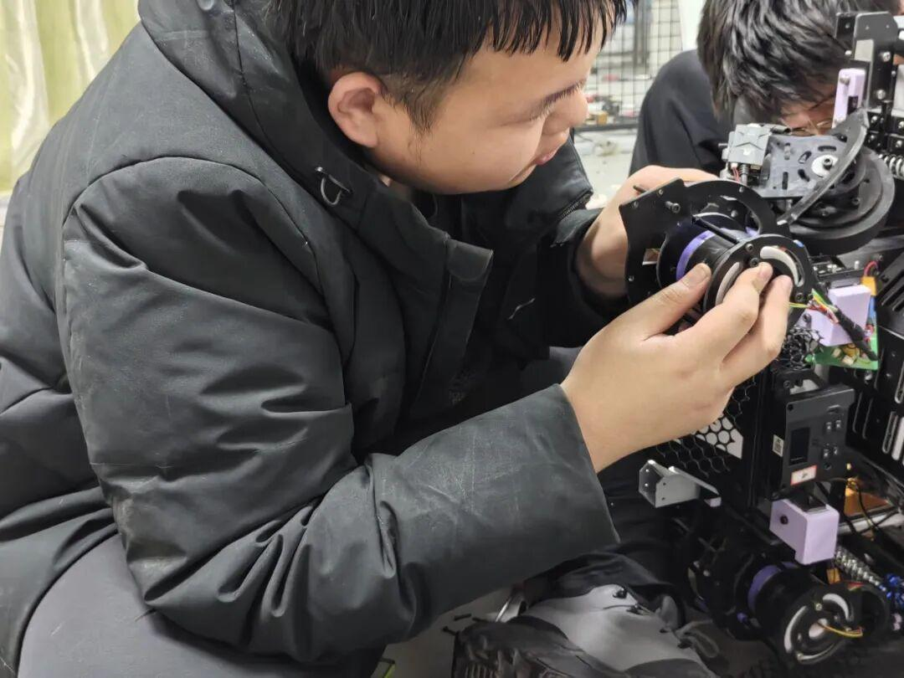
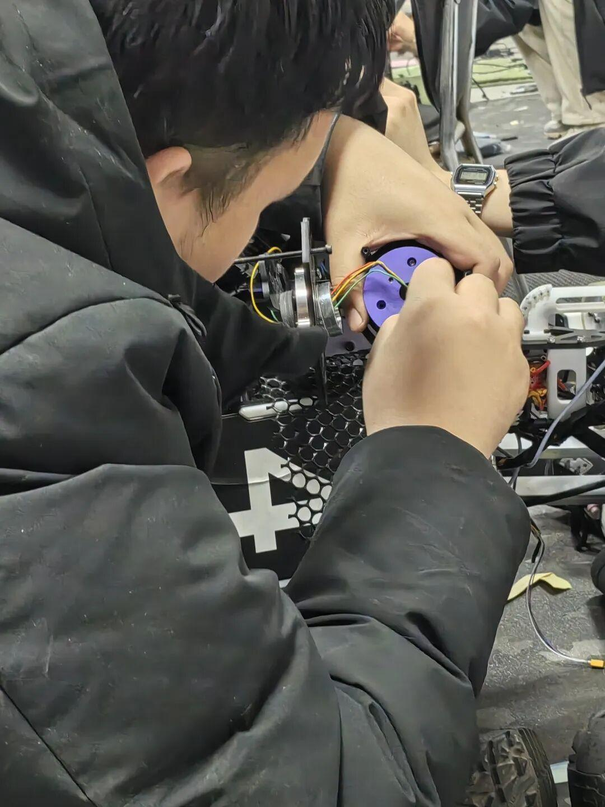
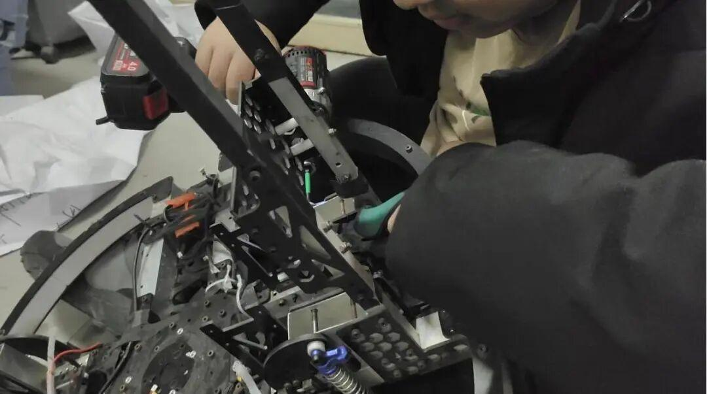
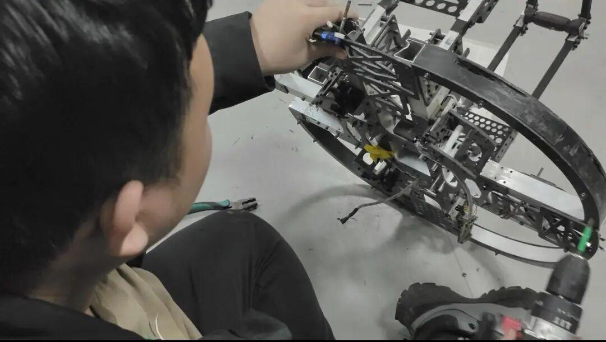
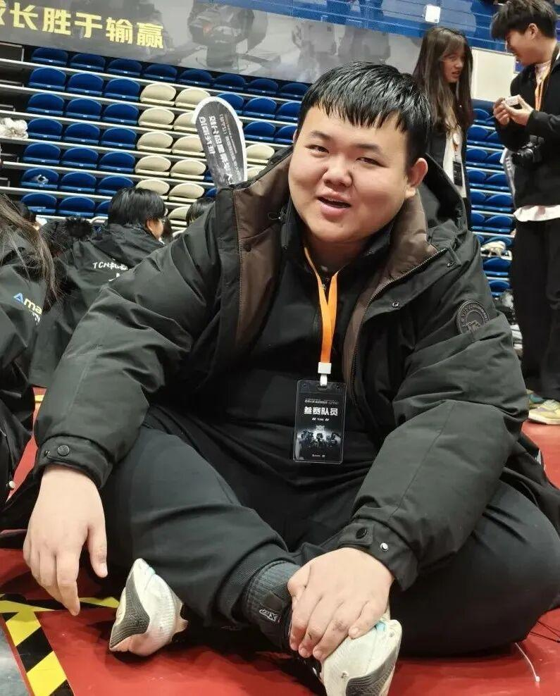
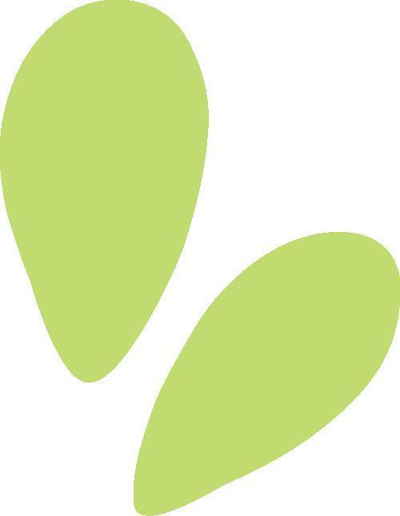
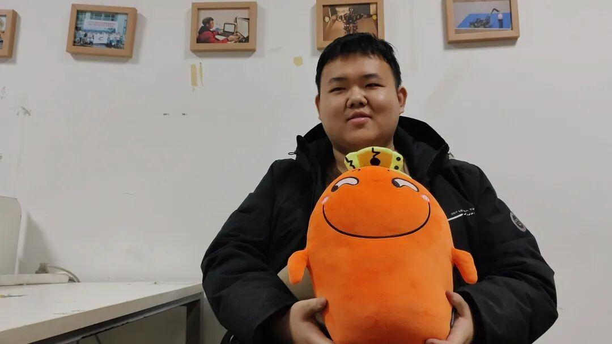
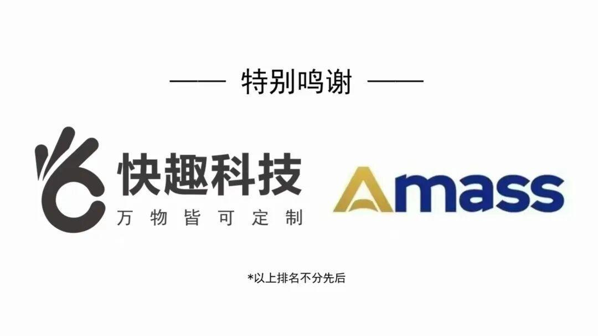

RMer专访|脚踏实地，稳步创新——黄海崴
2025
03/15
Ambition——Interview
[ 机械组采访 ]
—— 黄海崴专访 ——

●●●
PART.01
自我介绍
大家好我是Ambition战队25赛季的机械组组长与项管，我叫黄海崴。我是22届装甲车辆工程专业的学生。


Ambition |interview
机械组
PART.02
问答环节

机械组是如何培育新人的？
机械组是一个比较吃经验的一个组别，所以说我们更多的是采用线上与线下相结合的方式，通过线上传输理论知识与专业的学科知识。线下经过学长手拉手教加工工具的使用以及各兵种的一些常用的设计方法。通过下半学期各兵种的机械负责人与新生们进行一个一对一的帮扶与指导，使他们能够在大二的时候能够顺利的成为主力队员。

当时是以什么想法加入战队机械组？

因为当时在高中的时候看过咱们RoboMaster的对抗赛，然后我们在大一社团招新的时候，发现我们学校有社团也就是Ambition实验室。我就参加这个社团了。因为考虑到我的专业是装甲车辆工程与机械相关，所以说就报名了机械组。
对于机械组未来有何憧憬？
求真务实的心望——就是希望机械组的人员越来越多能够在赛场上能制造出更多更好的机器人。



去年准备对抗赛的过程中我们英雄组在装车，因为我们当时视觉组组长比较累躺在地上就睡着了。我和电控组长就分别在他的耳朵两边放大悲咒，然后大悲咒放完放雪花飘飘，一直放到他醒来陪我们继续干活。
结语

采访的过程总是短暂而又愉快的，从这次的采访当中我们了解到了黄海崴学长的加入战队的种种历程，以及对于考察组的学弟学妹的培养与期待。希望Ambition战队在老学长和新学弟学妹的共同努力下焕发出光芒，再创佳绩。
<<< END >>>
图片丨黄玉米
文案 | 黄玉米
排版 | 黄玉米
审核 | xx敏
